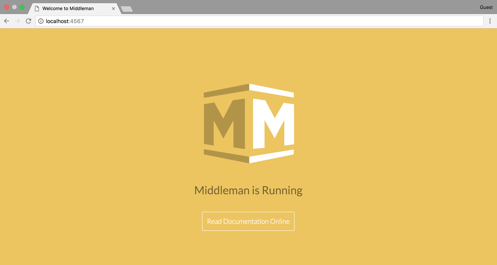
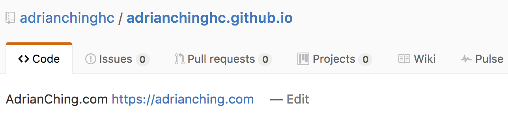

How to Build A Website Using Middleman and Github Pages
Website is an essential part of our digital lifestyle. Freelancers need website to showcase themselves, businesses need website to market their products and you need a website to maintain your online presence.
There are multiple ways of creating a website with the advancement of technology nowadays but I will be showing you how to build a static site particularly and the best part is, you get to host it for FREE!
Why Static Site?
You might be wondering, why static site? One reason, because it’s blazing fast!
A static site doesn’t have any dynamic contents as it consists mainly of HTML and CSS files. No fancy database is needed like Wordpress which reduces the server response time, making your website load extremely fast.
It is also easy to cache using CDNs such as Cloudflare.
Static site is a perfect choice for personal websites, blogs, and landing pages as these sites do not require any contents to be generated on the fly.
Prerequisites
As this is a pretty technical blog post, you will need some experience in using terminal, code editor and code sharing site such as Github
You can invite me to your job on Upwork if you need a website.
Middleman is a static page generator built using Ruby so you will need to install Ruby on your machine along with Bundler (RubyGems Management Tool).
If you don’t have Ruby installed yet, follow the tutorial here to get Ruby up and running on your machine.
Once that is done, install Bundler using the following command:
$ gem install bundler
You are all set up. Let’s get started!
Middleman and Github Pages
There are plenty of static pages generators out there, but why Middleman?
Simply because I’m from the world of Ruby on Rails and Middleman is very similar to Rails.
It uses ERB as the default templating language and helpers that are very similar to Rails such as link_to. You can even define your own helper if needed.
As for Github Pages, who doesn’t like FREE stuffs?
Github provides free hosting of your static website and all you have to do is to push your code to a Github Repository.
Why pay for hosting when you can get a website up and running with just one command?
Last but not least, Github Pages even allows you to have a custom domain mapped to your website so you don’t need to use username.github.io which is the default url for your github pages powered static website.
Set Up Middleman
Enough for all the introductions to Middleman App and Github Pages.
Let’s get to code, shall we?
Install Middleman
First, open up your terminal and enter the following command:
gem install middleman
If you are denied permission to install Middleman, add sudo in front of the command above so that you can install Middleman with the right permission.
Once the install process is done, check if Middleman is install correctly using:
middleman version
You should see something like Middleman 3.4.1 in the terminal. Version number will depend on the version of Middleman you’ve installed.
If you want to create a blog along side with your website, then do this so that the extension for blogging in Middleman is installed:
gem install middleman-blog
Once you have Middleman installed, navigate to the folder where you want to store your Middleman project.
Create Project
To create a new Middleman project, use the command:
middleman init my_new_site
or
middleman init my_new_site --template=blog
if you are creating a blog.
You can rename my_new_site to any name you want as that will be your project name for this Middleman project.
Once the project is created, navigate to the folder my_new_site and check out the folder structure.
── my_new_site
├── Gemfile
├── Gemfile.lock
├── config.rb
└── source
├── 2016-12-06-example-article.html.markdown
├── calendar.html.erb
├── feed.xml.builder
├── images
├── index.html.erb
├── javascripts
├── layout.erb
├── stylesheets
└── tag.html.erb
Gemfile is where you list down all the gems that you want to install in this Middleman project.
Gemfile.lock is the file where Middleman retrieve all the dependencies of the gems that you’ve installed. You will not need to make changes to this file as this is automated by Bundler.
config.rb is the file to store all the Middleman configurations. This is where you customize the behavior of Middleman according to your needs.
source is the folder that keeps all your html/css/assets/articles that will be compiled into a static website.
Start Middleman Server
Middleman comes with a local server for testing purposes.
Once the project is created, start the Middleman server.
bundle exec middleman server
You can now view your Middleman site by visiting http://localhost:4567

If you want to shut down your Middleman Server, just press CTRL + C on your keyboard.
The Middleman Server can be left open when you are editing your site. You will only need to restart the server after you add a new gem or edited the configuration of Middleman.
Tips:
Use
EXECJS_RUNTIME=Node bundle exec middleman serverto start your server if it always hangs after some time. This command uses NodeJS to run the Middleman Server. Refer to this issue for more details.
Middleman Extensions
Middleman has something called extensions that allows you to build more cool stuffs using extra features that these extensions provide you with.
Since these extensions are bundled as a Gem, you can just include them in your Gemfile, run bundle install and voila!
You just installed an extensions successfully.
Here are some of the extensions that I’m using for my Middleman site which is the one that you are on currently:
middleman-blog
middleman-livereload
middleman-minify-html
middleman-imageoptim
middleman-deploy
middleman-disqus
middleman-smusher
middleman-syntax
middleman-robots
You can look for more extensions here to add functionality to your middleman site.
Middleman Templates
Templates can help with speeding up development time, hence it is worth a mention here.
There are tons of templates available here for you to choose. You can choose templates with your favorite front-end framework, package manager or templating language.
I started mine with an SEO optimized template like this one here.
Asset Folders
As for asset files, you are free to place them according to your preference.
Just make sure you declare the path to these assets accordingly in the config.rb as shown below:
set :css_dir, 'assets/stylesheets'
set :js_dir, 'assets/javascripts'
set :images_dir, 'assets/images'
Create an Article
If you are planning to blog on your site, you can do that easily with the middleman-blog gem.
Once you’ve installed this blog engine for middleman, all you need to do is to:
bundle exec middleman article "Title of Blogpost"
Then, a markdown file will be created in the posts folder of your middleman app.
From there, you can write your post in markdown format and middleman-blog will take care of all the other things for you.
Github Flavored Markdown
Kramdown is the default Markdown engine in Middleman hence it does not fully support Github Flavored Markdown which was replaced redcarpet in my own middleman site.
If you are interested in doing this as well, add this to your Gemfile:
gem 'redcarpet'
Run bundle install.
Then enable Redcarpet and fenced code blocks in your config.rb:
set :markdown_engine, :redcarpet
set :markdown, fenced_code_blocks: true
last but not least, activate syntax highlighting in your config.rbthis way:
activate :syntax
Partials and Template helpers
Partials allow us to share content across multiple pages by only defining them once. Middleman provides this helpers method as well.
All you need to do is to save the partial file starting with an underscore - _navbar.html.haml, then call the partial using the partial tag
= partial "sidebar"
Middleman also provides multiple template helpers such as link_to and image_tag. You can read more about them here.
Deployment Settings
There are multiple ways of deploying a middleman site. My favorite has got to be using :git and hosting it using Github Pages.
Make sure you have the middleman-deploy gem installed. Then add these configurations to your config.rb:
activate :deploy do |deploy|
deploy.method = :git
deploy.branch = 'master'
deploy.build_before = true
end
Set Up Github Pages
Set Up Git Repository
Before setting up Github, let’s initialize a new repository in our project:
git init
When you deploy your Middleman site, the statically generated files will be on the master branch. Hence you should not be making changes to the master branch. Instead, we create a branch called source and store our middleman project on this branch.
git checkout -b source
git add .
git commit -am 'Initial Commit'
git push --set-upstream origin source
Set Up Github Repository
Now, all you need to do is set up Github Pages from your Github account.
Create a repository called username.github.io. Username being your Github username. For example, my Github username is adrianchinghc. Hence the repository for my Github Pages will be adrianchinghc.github.io.

After creating the repository, follow the instructions on Github to add the remote repository to your Middleman project.
git remote add origin https://github.com/username/username.github.io.git
Note that we will not be doing git push -u origin master as that will be automated by middleman-deploy.
Now, to deploy your Middleman site, use the bundle exec middleman deploy command.
Give it a few moments after deploying and soon you will see your site being deployed to http://username.github.io!
Custom Domain Name
For those who are interested to use a custom domain, you can do so with Github Pages as well.
First go to your GitHub Pages site’s repository.
Under your repository name, click on the Settings tab.
Under “Custom domain”, add your custom domain and click Save.
Then you will need to set up your custom domain with your DNS provider.
Depending on whether you want to set this up using an apex domain/subdomain, the configuration can be different.
I did mine using an apex domain which was really easy to set up. All I did was go to my DNS provider and add two A records that points my domain to the following IP addresses:
192.30.252.153
192.30.252.154
If you need more informations about setting up custom domain, here’s an article from Github explaining more about it.
Success!
Now you have a website generated using Middleman and hosted on Github Pages for FREE!
I don’t know about you but I love this because it helps me save a ton of moola.
Now go forth and create!
Thanks for reading all the way here. I know it’s a long article so I appreciate it. Let me know what you think in the comments section below!